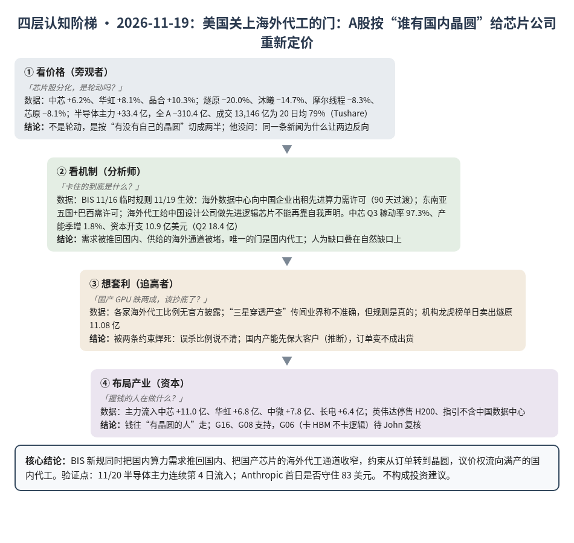
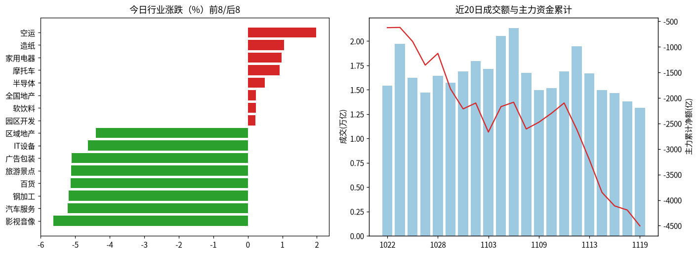
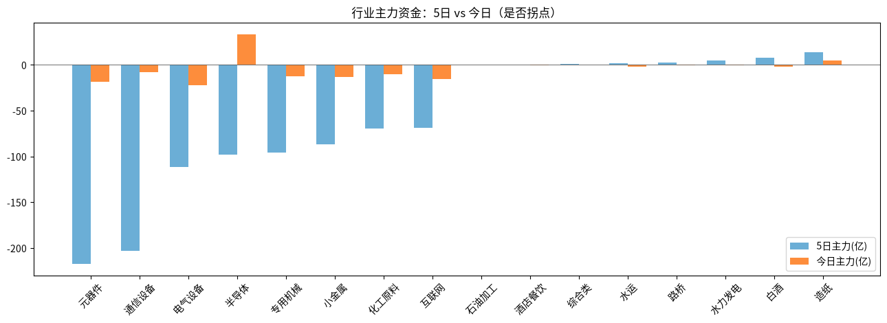

A股投研日报 · 2026-11-19（四层认知版）
- 主线
- 美国关上海外代工的门，A股按“谁有国内晶圆”重新给芯片公司定价
- 最重要变化点
- 中芯 +6.2%、华虹 +8.1%、晶合 +10.3%，燧原 −20.0%、沐曦 −14.7%；半导体主力 +33.4 亿，全 A −310.4 亿
- 机制含义
- 国产 AI 芯片的约束从“有没有订单”变成“拿不拿得到晶圆”，议价权往国内代工走
- 下一个观察点
- 11/20 半导体主力连续第 4 日净流入（今日 +33.4 亿），且通信、元器件仍净流出
本报告为基于公开数据的研究分析，不构成投资建议。
方法：四层认知阶梯 + 历史周期律。数据 Tushare（见附录）。不构成投资建议。
今日市场概况
上证 −0.28% 收 3,577.62；创业板 −0.79% 收 2,293.34（5 日 −8.61%）；科创50 +1.83% 收 1,270.78，中证1000 −1.88%。成交 13,146 亿元，是 20 日均 16,654 亿元的 79%；上涨家数只占 11.6%，个股中位数 −2.6%。全 A 主力 −310.4 亿元，连续第 6 日流出，昨天收窄到 −80.3 亿后又放大。流入居前：半导体 +33.4 亿、造纸 +5.0 亿、空运 +1.3 亿；流出居前：软件服务 −37.0 亿、电气设备 −22.3 亿、银行 −19.2 亿（Tushare）。龙虎榜机构合计 −12.97 亿元，其中燧原科技一家 −11.08 亿。海外：美债 10 年期 11/18 收 5.07%，连降三天（源）；KOSPI +1.39% 收 5,137.89，外资连续第 5 日净卖、今日 4,035 亿韩元（源）；DDR5 16Gb 现货均价 60.667 美元，+0.28%（源）。
变化点
世界观定位：阶段不变（三国→楚汉过渡带），回退条件不变。世界指标今日天气：整体多云：钱开始变紧、股市偏贵偏热、AI 链有裂缝、中国经济还没回暖，留意。本周变化：③「股市贵不贵、热不热」🔴→🟡；今日提醒：美债波动率 MOVE 降到 98.2，转绿。原型：楚汉相持时谁守住敖仓谁有粮；今天国内晶圆厂就是敖仓。
和昨天、上周比：昨天是硬件三板块一起回流（+129.3 亿），今天只剩半导体在流入，元器件 −18.2 亿、通信 −8.3 亿，三者合计仅 +6.9 亿。上周四（11/12）全 A 主力 −516.5 亿、成交 19,459 亿；一周后流出小了，但成交又缩了三成。
看价格：「芯片股分化，是轮动吗？」不是轮动，是一刀切成两半：有自己工厂的涨（中芯、华虹、晶合），靠别人代工的跌（燧原、沐曦、摩尔线程、芯原）。他没问：为什么同一条新闻让两边反向走。
看机制：「卡住的到底是什么？」美国商务部 11/16 发布临时规则，11/19 刊登生效：海外数据中心向中国企业出租先进算力要许可（已有项目 90 天过渡）；印尼、马来西亚、新加坡、泰国、巴西列为需许可地区；海外代工厂给中国设计公司做先进逻辑芯片，不能再靠自我声明过关（源）。一条规则同时做了两件事：国内企业在海外租的算力要回流，国产芯片的需求变大；国产芯片去台积电、三星流片的路变窄，供给变少。剩下的门是国内代工，而中芯三季度稼动率已 97.3%，月产能只比二季度多 1.8%，资本开支 10.9 亿美元，比二季度少四成（公司财报，源）。“三星穿透严查代工”的传闻业界称不准确（源），但规则本身是真的。推断这是人为缺口（政策造成、有时间表），压在一个自然缺口上（扩产以年计），所以短期解不开。风险敞口接口：复核后有效断供 Δ$≈0（政策约束不在柜口径内）。
想套利：「国产 GPU 跌两成，该抄底了？」被两条约束卡住：各家海外代工比例没有官方披露，跌幅里有多少是误杀说不清；推断中芯先保华为这类大客户，小设计公司排队靠后，订单再多也变不成出货。
布局产业：钱在往“有晶圆的人”那边走：中芯、华虹各获主力 +11.0 亿、+6.8 亿，设备、封测也在流入；龙虎榜机构卖出燧原 11.08 亿。G16（台积电这条路关死）、G08（管制不松）读数支持；G06 说中国卡在 HBM 不在逻辑芯片，今天逻辑代工也成了门槛，建议 John 复核。
判断：美国为什么现在补这两个洞？海外租算力和海外代工是绕过禁令最便宜的两条路；推断下一步大概率是扩大“需许可地区”名单、查执行。对中国：防守靠国内晶圆和 HBM 扩产，眼前看设计公司能否预付锁产能。
中长期展望（3–12 个月与 2027）
3–12 个月：国产 AI 芯片的约束从需求端转到晶圆端，议价权流向国内代工（G16、G08）；「钱紧」「AI 链」两问仍黄，海外融资胃口还在（Anthropic 定价高于区间）。
2027：P030（国产卡受限主因仍是 HBM）面临挑战：逻辑代工可能和 HBM 一起卡；P023 仍是海外总闸门。
什么会改变展望：①美国给中国设计公司发放代工许可或延期执行；②中芯季度资本开支回到 18 亿美元以上；③四大云 2027 指引合计 <8,500 亿美元。
七、明日/本周验证点（可证伪）
- 11/19 美东 Anthropic 首日收盘 ≥83 美元发行价；破发则融资层裂缝扩大。
- 11/20 半导体主力连续第 4 日净流入，且通信、元器件仍流出；半导体转流出则今天的分化只是一日情绪。
- 本周（至 11/20）中芯、华虹任一家公开确认 2027 年调价；明确否认则“议价权流向代工”减弱。
- 本周 DDR5 16Gb 现货跌破 58.85 美元（较 60.667 跌 3%）。
附录 A：机会表、检查清单、验证点回顾、风险复核
机会表（产业/环节层面，不构成投资建议）
| 环节 | 变化信号 | 认知层级 | 关键风险 / 证伪 |
|---|---|---|---|
| 国内晶圆代工（先进与成熟） | BIS 新规堵海外代工；中芯稼动率 97.3%、产能季增 1.8% | 第 2→4 层 | 美国发放许可或延期；代工撤回 2027 调价 |
| 国产设备、材料（含光刻胶） | 代工满产但扩产慢，设备交期拉长 | 第 3 层：待验证 | 中芯资本开支继续下滑，订单到收入有两三个季度时滞 |
| 抄底国产 GPU 设计 | 陷阱：海外代工比例未披露，机构龙虎榜单日卖出燧原 11.08 亿 | 第 3 层 | 公司披露代工以国内为主且晶圆有保障 |
检查清单应用
- 缺口性质：人为缺口叠在自然缺口上。规则是政策、可调整（60 天意见期、许可可批），国内先进产能扩张以年计。
- 替代弹性：GPU 设计公司短期几乎换不了代工厂（换厂要重新流片、验证）；国内代工在先进逻辑上没有第二家规模供应商。
- 领先 vs 滞后：领先＝代工稼动率、调价函、资本开支、主力资金、BIS 执行细则与许可；滞后＝设计公司季报收入、毛利率、股价。
上一交易日验证点回顾（11/18 → 11/19）
| # | 验证点 | 读数 | 判定 |
|---|---|---|---|
| 1 | 11/19 Anthropic 定价 ≥78 美元 | 83 美元，募资 813 亿美元（源） | 命中 |
| 2 | 硬件三板块连续第 2 日净流入且成交 ≥15,000 亿 | 合计 +6.9 亿（半导体 +33.4、元器件 −18.2、通信 −8.3）；成交 13,146 亿 | 未命中 |
| 3 | 至 11/20 中芯、华虹公开确认 2027 调价 | 今日无新确认 | 待验证 |
| 4 | 本周 DDR5 16Gb 跌破 58.69 美元 | 60.667（11/19） | 未触发 |
G12 / P023 跟进：11/18 报已按英伟达三季报（营收 1,158 亿美元、下一财年增速上调到约 75%）判为“未触发复核”；今日无四大云 2027 指引新信息，维持。
供应链风险敞口（人工复核版）：脚本版见 risk_section_20261119.md。口径为 GB300/NVL72 当量柜年化系统价值；Δ$ 为事件类型假设模板，仅用于排序，非预测。脚本 4 条，误匹配 4 条（3 条为扩产/经营新闻，1 条为距三井金属 HVLP 节点约 80 公里的 5.3 级地震，未见受损报道）。复核后今日有效断供 Δ$≈0，基线维持年化 EL 57.7 亿美元（10/21）。采集降级：GDELT 限流或 0 篇；巨潮公告匹配未恢复。
个股读数说明：中芯、华虹、晶合、燧原、沐曦、摩尔线程、芯原的涨跌幅与主力净额来自 Tushare daily / moneyflow（11/19），只用来说明分化方向，不构成个股买卖建议。海光信息 −4.8%、寒武纪 −1.6%。
世界指标数据说明：今晚 update.py 数据源 15/15 成功（20:19–20:32 运行，先于日报取数，未并发）；AI 泡沫监控页阶段读数「一顶后回撤」。

一句话总结：楚汉相持，谁守住敖仓谁有粮；今天国内晶圆厂就是敖仓。
本报告为基于公开数据的研究分析，不构成任何投资建议。
附录：市场数据（证据底稿）


| 收盘 | 今日% | 5日% | 20日% | MA20 | 成交(亿) | |
|---|---|---|---|---|---|---|
| 上证指数 | 3,577.62 | -0.28 | -2.14 | -2.20 | 3,644.38 | 6,369.09 |
| 深证成指 | 10,583.20 | -0.71 | -5.49 | -6.82 | 11,114.24 | 3,342.47 |
| 创业板指 | 2,293.34 | -0.79 | -8.61 | -11.00 | 2,477.06 | 1,316.48 |
| 科创50 | 1,270.78 | 1.83 | -2.98 | -2.69 | 1,255.21 | 1,101.21 |
| 上证50 | 2,773.46 | 0.32 | 0.05 | 1.79 | 2,770.85 | 1,289.16 |
| 沪深300 | 3,984.84 | 0.03 | -1.46 | -1.27 | 4,042.02 | 3,954.41 |
| 中证500 | 6,251.96 | -0.48 | -5.33 | -6.06 | 6,511.81 | 2,242.86 |
| 中证1000 | 5,938.90 | -1.88 | -9.16 | -9.72 | 6,401.05 | 2,321.21 |
行业资金热力（按5日主力净额排序，前8/后8）
| industry | 今日% | 5日% | 20日% | 今日主力(亿) | 5日主力(亿) | 资金连续天数 |
|---|---|---|---|---|---|---|
| 造纸 | 1.0 | -7.6 | -1.9 | 5.0 | 13.6 | 14.0 |
| 白酒 | -0.0 | 0.9 | 11.0 | -2.2 | 8.0 | -2.0 |
| 水力发电 | 0.1 | 2.5 | -0.7 | -0.5 | 4.8 | -2.0 |
| 路桥 | -1.4 | 4.4 | 26.6 | -0.4 | 2.5 | -1.0 |
| 水运 | -2.0 | 0.1 | -4.6 | -2.1 | 1.9 | -1.0 |
| 综合类 | -1.0 | -6.6 | -14.7 | 0.7 | 0.9 | 1.0 |
| 酒店餐饮 | -3.0 | -0.2 | 9.7 | -0.2 | 0.6 | -1.0 |
| 石油加工 | -0.2 | -1.4 | 7.6 | 0.6 | 0.3 | 2.0 |
| 元器件 | -1.5 | -13.1 | -20.4 | -18.2 | -217.2 | -1.0 |
| 通信设备 | -0.2 | -15.8 | -31.3 | -8.3 | -203.1 | -1.0 |
| 电气设备 | -2.6 | -10.2 | -3.8 | -22.3 | -111.1 | -7.0 |
| 半导体 | 0.5 | -6.8 | -2.6 | 33.4 | -97.8 | 3.0 |
| 专用机械 | -2.2 | -15.3 | -11.8 | -12.2 | -95.5 | -1.0 |
| 小金属 | -1.4 | -12.6 | -11.8 | -12.8 | -86.4 | -6.0 |
| 化工原料 | -1.2 | -8.5 | -7.1 | -10.4 | -69.5 | -10.0 |
| 互联网 | -4.2 | -12.6 | -5.7 | -15.2 | -68.8 | -7.0 |
市场情绪时间序列（近10日）
| trade_date | 成交(亿) | 上涨占比% | 主力净额(亿) | 个股中位涨跌% |
|---|---|---|---|---|
| 20261106 | 16716.0 | 13.6 | -524.0 | -1.9 |
| 20261109 | 14945.5 | 40.2 | 132.1 | -0.3 |
| 20261110 | 15167.5 | 76.7 | 175.5 | 1.3 |
| 20261111 | 16886.9 | 63.5 | 201.5 | 0.6 |
| 20261112 | 19458.7 | 15.7 | -516.5 | -1.6 |
| 20261113 | 16670.7 | 13.7 | -595.2 | -2.0 |
| 20261116 | 14941.6 | 20.4 | -640.0 | -2.1 |
| 20261117 | 14675.2 | 23.8 | -264.0 | -1.3 |
| 20261118 | 13800.2 | 23.6 | -80.3 | -1.2 |
| 20261119 | 13145.8 | 11.6 | -310.4 | -2.6 |
今日上涨649家/下跌4876家，涨幅≥9.8% 34家、跌幅≤-9.8% 114家¹。
龙虎榜侧写：机构专用席位合计 -12.97 亿；净买入居前 粤芯半导体(+1.71亿)、光洋股份(+0.98亿)、果麦文化(+0.97亿)，净卖出居前 燧原科技(-11.08亿)、冰山冷热(-1.64亿)、科森科技(-1.26亿)。 沪深股通活跃股：成交前五为宁德时代、中际旭创、北方华创、寒武纪、紫金矿业（成交额≠净买入）。
注：¹涨跌停为按±9.8%阈值近似（limit_list_d无权限）。²行业为Tushare stock_basic分类自行聚合（sw_daily/ths_daily/行业资金流接口无权限），成交加权、剔除N/C新股，成分≥8只。³主力=大单+特大单净额（moneyflow）。⁴2024年8月起北向每日净买入停止披露，moneyflow_hsgt/hsgt_top10数值为成交口径，不可解读为净流入。⁵新闻/公告接口无权限，改用新浪财经7x24公开快讯自动抓取+人工补充。
接口状态：trade_cal:OK；stock_basic:OK；index_daily:OK；moneyflow_hsgt:OK；hsgt_top10:OK；top_list:OK；top_inst:OK；index_dailybasic:OK；新浪7x24(公开):OK 3097条（11-18 14:28 起）